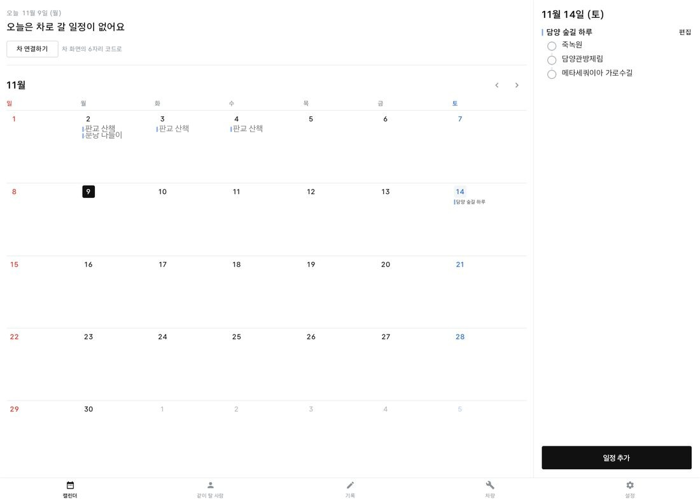
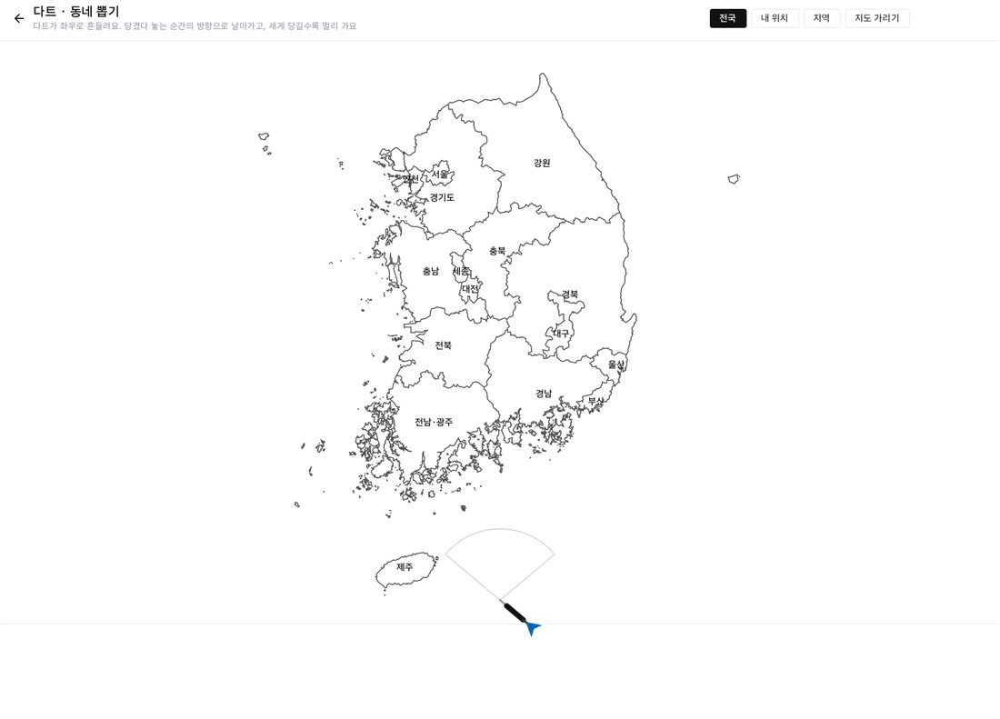
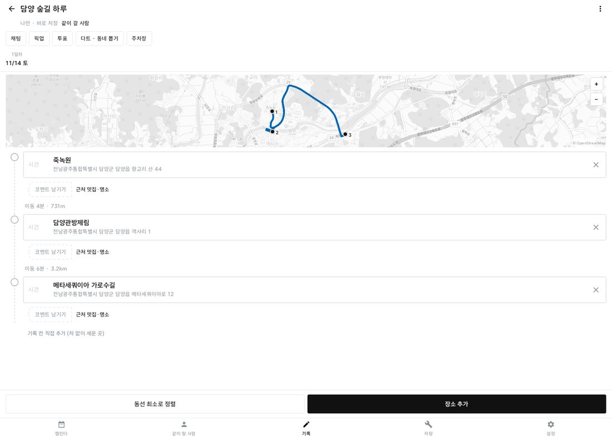
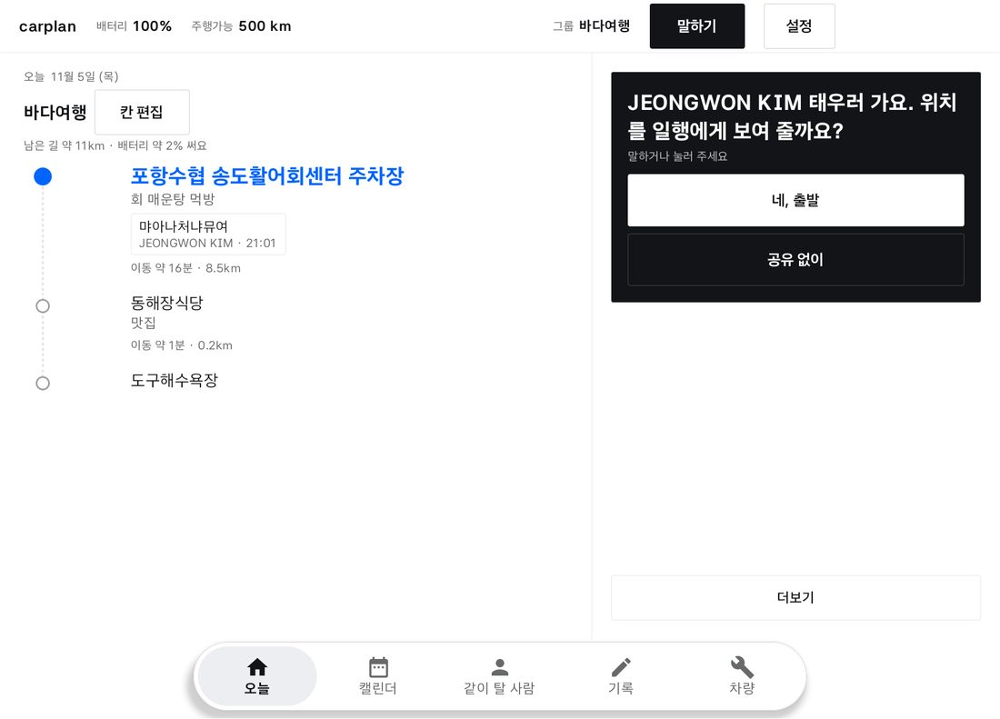
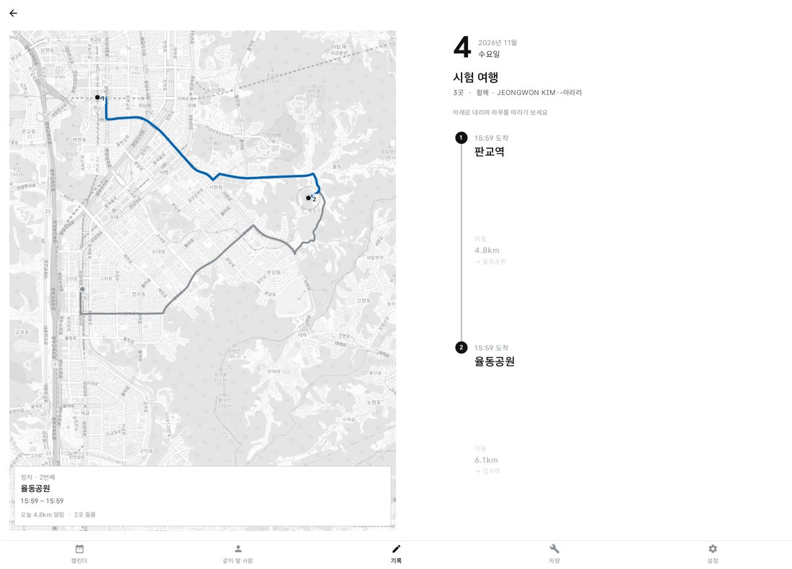
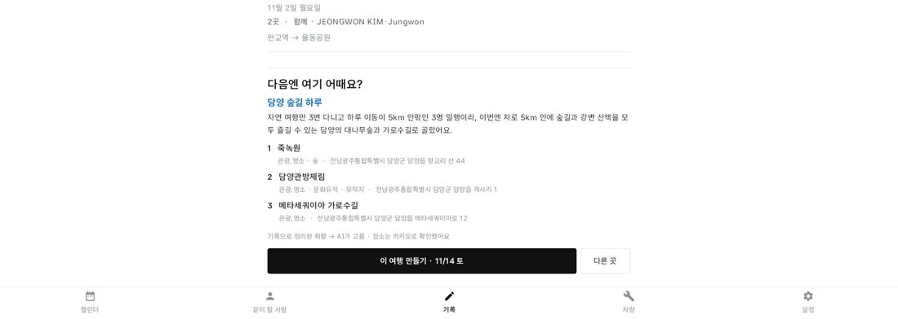
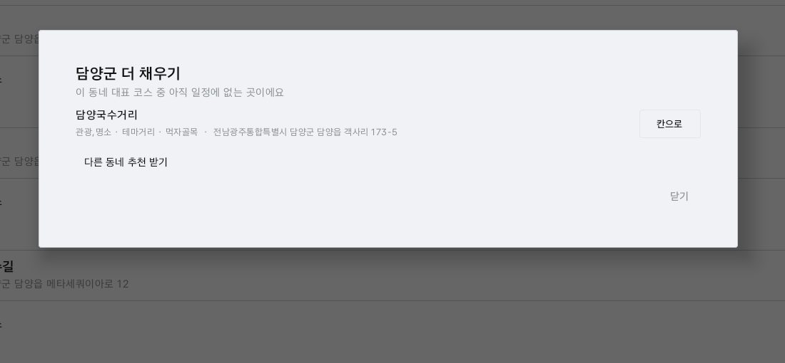
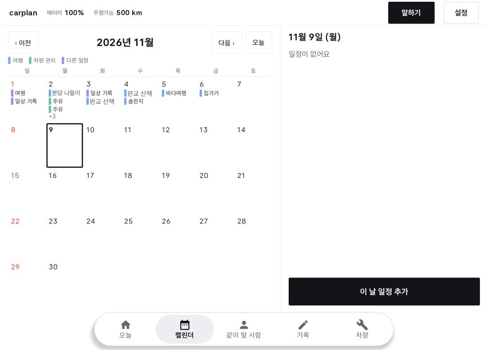
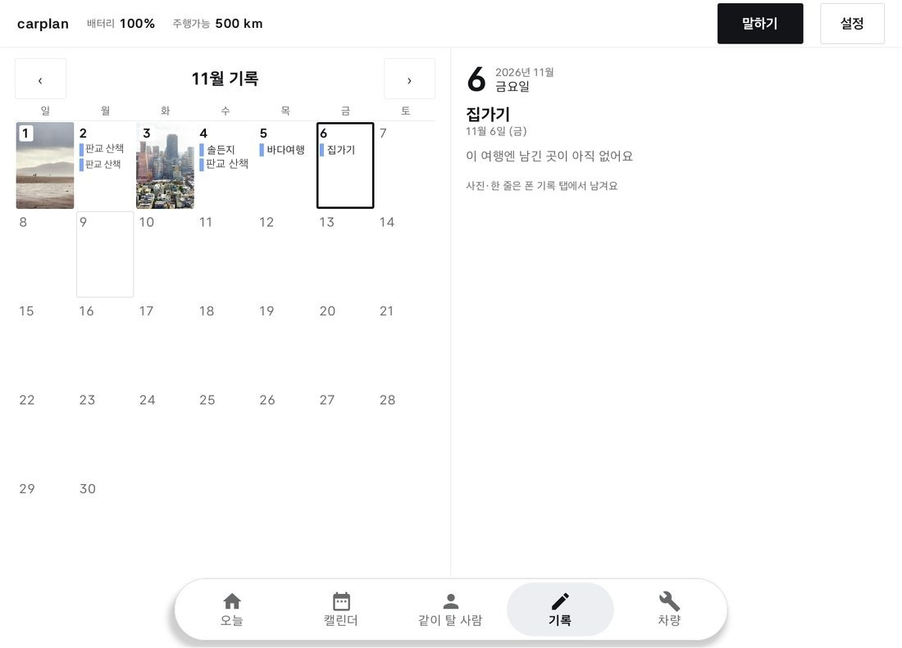

carplan
이 안내서도 그 순서 그대로입니다. 일행이 폰에서 일정을 바꾸면 달리는 중인 차 내비가 바로 바뀌고, 차가 설 때마다 기록이 한 칸씩 쌓여 다음 여행 추천의 재료가 됩니다.
5분 체험 순서
두 APK(차·폰)를 깔고 아래만 따라 하면 전체 고리가 한 바퀴 돕니다.
- 차: Pleos Connect 에뮬레이터(Cold boot)에 차 앱 설치 → 폰: 폰 앱 설치, 이름 넣고 시작
- 차 화면의 6자리 코드를 폰 첫 화면(또는 차량 탭)에 입력 → 이 차의 차주가 됩니다
- 폰 캘린더에서 날짜를 눌러 여행을 만들고 장소 칸을 2~3곳 넣기 → 차 "오늘"과 내비에 바로 반영
- 차 화면 왼쪽 위 "carplan"을 길게 누르면 시연 메뉴 → [오늘 시험 여행 만들기] → [시뮬레이션 재생]: 타기 → D → 실제 도로 주행 → 도착 → P → 기록 칸이 생기는 것까지 자동 재생
- 폰 기록 탭: 다녀온 날이 일기장으로, 맨 아래 "다음엔 여기 어때요?" AI 추천 → [이 여행 만들기]
adb forward tcp:8088 tcp:8088 후 127.0.0.1:8088)로도 보낼 수 있지만, 시연 메뉴가 다 대신 눌러 줍니다. 구글 로그인·푸시·사진은 Google Play 서비스가 있는 실제 폰에서 됩니다.1시작 — 한 번만 하면 됩니다
차와 폰을 잇는 건 6자리 코드 하나, 사람끼리는 친구 한 번. 그 뒤로는 모든 게 자동으로 오갑니다.
설치·로그인·차 연결 익명으로 시작 · 구글은 나중에
폰 앱은 이름만 넣으면 시작합니다(익명 계정). 구글 로그인은 언제든 첫 화면·설정에서 — 연결해도 쓰던 데이터(uid)가 그대로 따라옵니다. 차 화면에 뜨는 6자리 코드를 폰에 입력하면 이 차의 "차주"가 되고, 차주가 만든 일정의 일행은 그날 일정을 같은 권한으로 함께 편집합니다.
친구와 묶음 친구는 한 번 · 초대는 일정마다
친구는 친구 코드나 QR로 한 번만 맺으면, 다음부터는 일정에서 이름 한 번 눌러 초대합니다. 출퇴근 카풀·가족처럼 자주 같이 타는 사람들은 "자주 타는 사람" 묶음으로 만들어 [모두 초대] 한 번에 다 부릅니다. 여행 없는 날 차 화면 QR을 찍으면 차주와 친구 맺기가 됩니다.
2여행 전 — 폰에서 같이 짭니다
어디 갈지 정하고 → 하루 동선을 채우고 → 같이 갈 사람·채팅·픽업까지. 전부 여행 화면 한 줄의 칩(채팅 · 픽업 · 투표 · 다트 · AI 추천 · 주차장)에서 시작합니다.
캘린더에서 일정 만들기·고치기 한 줄 입력 · 8색 카테고리
캘린더가 앱의 중심입니다. 날짜를 눌러 한 줄로 일정을 넣고(장소 칩이 맨 앞), 제목에 "여행·캠핑·나들이"가 들어가면 종류가 자동으로 여행이 됩니다. 종류는 여행·차량 관리·다른 일정에 내 카테고리(8색)를 더할 수 있습니다.
- 일정을 눌러 수정(제목·종류·날짜·시간·장소), [지우기]는 확인 후 — 지워도 8초 안에 [되살리기]
- 장소 하나짜리 일반 일정은 [여행으로 바꾸기] — 그 장소가 첫 칸이 되고 뒤로 계속 넣을 수 있습니다
- 반복 일정(매주 출퇴근 등)과 구글 캘린더 읽어오기(설정에서 켜기) 지원
- 일정마다 [알림] — 폰이 제시간에 울립니다(반복 포함)

캘린더: 오늘 카드 + 월 보기(옆으로 넘기기) + 고른 날의 일정
어디 갈지 같이 정하기 — 투표와 다트 자동 마감 · 전국 지도
투표: 후보 장소를 올리면(검색·추천·다트 결과에서 [투표에 올리기]) 일행이 누르고, 전원이 다 누르면 자동 마감 — 최다 득표가(동점이면 둘 다) 바로 칸으로 들어갑니다.
다트 · 동네 뽑기: 전국 지도에 다트를 던져 동네를 뽑습니다. 범위는 전국 / 시·도 / 내 위치 반경 N km(10~200)로 좁힐 수 있고, 일행과 같은 방에서 실시간으로 같이 보며 돌아가며 던집니다(범위 밖은 무효 — 다시).

다트를 당겼다 놓으면 전국 지도 어딘가에 — 뽑힌 동네의 맛집·관광지를 바로 [칸으로], 대표 코스가 있으면 [코스를 그대로 칸으로], [채팅에 올리기]까지
레일에 하루 동선 채우기 끌어서 순서 · 동선 최소 정렬
여행 하루는 레일 타임라인입니다. 위에는 경로 지도(스크롤하면 접히고, 두 손가락·더블탭 확대, [전체]), 칸마다 장소·도착 시각·메모가 달립니다.
- 장소 검색은 카카오 + 우리가 가 본 곳 먼저, 여러 곳을 연달아 넣고 [다 넣었어요]
- 칸을 끌어서 순서 바꾸기, [동선 최소로 정렬] 한 번이면 총 이동이 가장 짧은 순서로
- 칸마다 [근처 맛집·명소]: 또 갈래요 → 가 봄 → 가까운 순으로 추천, "평점·메뉴 ›"는 카카오맵 페이지로, [다음 칸으로]는 누른 순서대로 끼워 넣기
- 칸 아래 코멘트 글타래: "여기 주차 어렵대" 같은 말이 그 장소에 달립니다
- 이동 시간·거리 자동 계산, 예상 도착 시각은 약속이 아니라 예상 — 늦으면 뒤 칸이 같이 밀립니다
- 여러 날 여행은 일차 탭·옆으로 넘기기, 뺀 칸도 [되살리기]

여행 하루: 접히는 경로 지도 + 레일 + 채팅·픽업·투표·다트·AI 추천·주차장 칩
채팅 — 여행마다 방 하나 자동 카드 · 장소를 칸으로
여행마다 채팅방이 생깁니다(칩 맨 앞, 새 글 수 표시). 대화가 흩어지지 않도록 앱에서 일어난 일이 자동 카드로 올라옵니다:
- 칸이 바뀌면 — "민지님이 ○○을 넣었어요 / 뺐어요"
- 코멘트 — 칸에 단 말이 채팅에도 한 줄로(대화가 두 곳으로 갈라지지 않게)
- 픽업 — 누가 어디서 타는지
- 도착 — 차가 어디에 도착했는지, 하루 끝 — "오늘 3곳 다녀왔어요"와 동선 한 줄
채팅에 올라온 장소 카드는 바로 [칸으로] 넣을 수 있고, 다트 결과도 공유됩니다. 혼자 쓰는 여행이면 "초대하면 채팅방이 생겨요" 안내가 뜹니다.
픽업 자리 정하기 지도에서 내 위치 찍기
태워 갈 일행은 지도에서 내 위치(실시간 점)를 보며 태울 곳을 찍습니다 — 주소가 자동으로 붙어 "○○ 앞"이 되고, [이름으로 찾기]도 됩니다. 그 자리는 일정의 한 칸으로 들어가 다른 장소처럼 끌어서 옮기고 동선 정렬에도 포함됩니다. 여럿이면 차가 총 시간이 가장 짧은 순서로 데리러 갑니다.
3여행 날 — 차가 안내합니다
차에 타면 묻고, 데리러 가고, 달리는 중에 바뀐 일정도 그대로 따라갑니다. 운전자가 화면을 볼 수 없으니 중요한 일은 말로, 조작은 버튼 하나나 음성으로.
타면 묻습니다 — "다음 목적지로 갈까요?" 음성 + 버튼 하나
차를 켜거나 D단에 넣으면 "다음 목적지 ○○로 갈까요? 지금 출발하면 15:22 도착이에요"라고 말로 묻고, "응/아니"로 답하거나 버튼 하나를 누릅니다. 오늘 레일이 왼쪽에, 오른쪽엔 다음 갈 곳 하나만. 오늘 여행이 여럿이면 [다른 여행]으로 고릅니다.
[말하기] 음성 명령: "주유소" "주차장" "건너뛰기" "다음 목적지" 등을 말로 — 못 알아들으면 한 번만 다시 묻고 버튼으로 보여 줍니다. 내비 경유지는 2+목적지까지라 일정이 많아도 도착할 때마다 자동으로 채워 넣습니다. 이름만 쓴 장소(주소 없음)는 현대 내비 검색으로 이어 줍니다.

차 첫 화면: 오늘 레일(코멘트 말풍선 포함) + 픽업 질문
데리러 가는 길 위치 공유는 그때만
픽업이 있으면 "○○ 태우러 가요. 데리러 가는 동안만 차 위치를 보여 줄까요?"를 먼저 묻습니다. 예라고 하면 기다리는 그 사람 폰에만 차 위치·남은 시간·"5.8km 중 2.9km 왔어요"가 실시간으로 보이고, 3분 전 "곧 도착" 알림이 갑니다. 공유되는 건 동승자가 아니라 차 위치뿐이고, 다 태우면 자동으로 꺼지며 위치는 지워집니다. 차가 닿으면 "○○ 픽업 장소예요"라고 말해 줍니다. 탄 사람이 앉으면 차 화면에 참여 QR이 자동으로 떠서 그 자리에서 여행에 들어올 수 있습니다.
가는 중 — 화면은 그대로, 경로는 자동 내비와 반반 · 원래대로
[가기]를 누르면 경로는 현대 내비로 들어가고 carplan 화면은 그대로 남습니다(내비로 넘어가 못 돌아오는 일 없음). ⋮를 끌어 내비와 반반으로 보면 하루 타임라인이 세로로 다시 그려집니다.
달리는 중에 일행이 폰에서 일정을 바꾸면 5초 모아 경로가 자동으로 바뀌고 말로 알려 주며, 운전자에겐 [원래대로]가 10초 떠 있습니다(누르면 이전 경로 유지, 폰엔 "운전자가 이전 경로 유지"). 주행 중 차주 폰은 편집이 잠기고, 도착 예정 시각은 차가 계산한 하나의 숫자로 일행 모두에게 보입니다. 주행 중엔 화면이 "오늘"만으로 줄고 움직임도 멈춥니다(Pleos 주행 제한) — 밤엔 자동 다크 모드.

가는 중: 다음 목적지·그다음 + [주유소·충전소] [주차장] [내비 보기]
가는 길 서비스 — 기름·주차·도착 전 알림 일정 기준
[주유소·충전소]는 지금 자리 + 남은 일정 3곳 둘레의 가격(오피넷)을 모아 오늘 갈 길 최저가 5곳 — 고르면 경유지로 들렀다가 원래 일정으로 이어집니다. 연료가 모자랄 것 같으면 출발 때 미리 계산해서 "율동공원 지나서 ○○ 주유소에서 넣으면 좋아요"라고 먼저 말해 주고, 레일에 "주유하기" 칸이 생깁니다. 전기차는 충전소·도착 배터리 %로 같은 일을 합니다.
[주차장]은 지금 가는 곳 근처를 가까운 순으로. 도착 5분 전엔 동승자 폰에 "주차장 찾아봐 주세요" 알림이 가고, 누르면 바로 목록이 열립니다 — 찾는 일은 동승자가, 운전은 운전자가.

오늘 갈 길 최저가 주유소 — 싼 순, "○○ 근처"

다음 목적지 근처 주차장 — 가까운 순
4다녀와서 — 기록이 쌓입니다
기록하려고 뭘 누를 필요가 없습니다. 차를 세우는 것이 곧 기록입니다.
세우면 기록 칸 P단 + 문 신호 · 자동
P단에 넣고 운전석 문이 열리면 그 자리에 기록 칸이 생깁니다(계획에 있던 곳이면 그 칸에 연결, 아니면 "계획 밖" — 장소 이름도 좌표로 찾아 줍니다). 주차 위치가 저장돼 일행 폰 지도에 점으로 보이고, "B2 C-14" 같은 층·구역 메모도 남길 수 있습니다. 폰 GPS가 아니라 차 신호라서 정확하고 배터리를 쓰지 않습니다.
주유·충전을 하면 연료 변화로 알아채 주유소 이름·리터·금액까지 차계부에 자동 기록됩니다.
일기장 — 스크롤이 곧 시간 사진 · 한 줄 · 움직이는 지도
다녀온 날이 여행 단위 책으로 쌓입니다(사진이 없으면 실제 지도 위 경로가 표지). 한 장을 열면 스크롤할수록 레일이 자라며 장소·사진(칸당 10장)·한 줄·머문 시간이 하나씩 나타나고, 칸 사이에선 차가 실제 도로를 따라 달립니다.
- [또 갈래요] — 일행 각자 누르고, 다음 추천·장소 검색 순서에 반영
- 하루를 이미지 한 장·짧은 영상(mp4)으로 내보내 공유
- 여행 없는 날도 일상 기록: 차를 세우면 그날 "일상" 칸이 생기고, 기록 탭 맨 위 [오늘 쓰기]로 직접 쓸 수도

기록 탭: 여행마다 지도 표지 + 함께 간 사람

일기 한 장: 왼쪽 지도의 차가 스크롤을 따라 실제 길을 달려요
차량 관리 차계부 · 소모품 알림
주행거리는 차가 올려 주고, 주유 기록은 자동으로 쌓입니다(폰 차량 탭에서 수정 가능, 월 주유비 집계). 엔진오일 같은 소모품 교체 시기가 오면 캘린더에 "차량 관리" 일정이 생기고 아침 9시에 알림이 갑니다. 워셔액 부족 같은 차 경고도 캘린더로. 연료 알림 기준(%)은 설정에서 바꿉니다.
5다음 여행 — 추천으로 이어집니다
쌓인 기록이 되돌려주는 순간. 고리가 다시 ②로 돌아갑니다.
"다음엔 여기 어때요?" 우리 기록 + 공공데이터 + AI
① 기록만으로 취향을 계산하고(자주 간 종류 %, 또 갈래요, 하루 이동 거리, 몇 명이 같이 — 이름·사진·메모는 서버로 안 보냄) ② 전국 72개 동네의 실재 대표 코스(한국관광공사 공공데이터 + 직접 정리)를 후보로 깔고 ③ AI는 그 위에서 안 가 본 동네와 하루 동선을 골라 이유를 한 문장으로 말합니다. 명소 사이에 점심 식당·카페를 끼우는 것까지 규칙이고, 장소는 카카오로 실재 확인된 것만 보여 줍니다. AI가 응답하지 않아도 코스 데이터만으로 추천이 나옵니다.

"자연 100%, 하루 5km, 3명 일행이라 → 담양" — 죽녹원 → 국숫집(점심) → 관방제림 → 메타세쿼이아길
[이 여행 만들기] 한 번이면 토요일 여행 일정 + 장소 칸 + 도로 경로까지 생기고, 이미 여행을 짜는 중이면 [AI 추천] 칩이 그 동네 대표 코스 중 아직 일정에 없는 곳만 골라 채워 줍니다. 다트로 뽑은 동네의 대표 코스도 같은 기억장치에서 나옵니다.

기록 탭 끝의 추천 카드 → [이 여행 만들기 · 토]

여행을 짜는 중이면 "○○ 더 채우기" — 빠진 곳만 [칸으로]
+여행이 없는 날에도
이 앱은 여행 앱이 아니라 "차의 캘린더"라서, 평일에도 돌아갑니다.
출퇴근 — 차가 먼저 알아챕니다 반복 학습
비슷한 시간에 같은 곳으로 3번 가면 폰이 "출퇴근으로 등록할까요?"라고 제안하고, 등록해 두면 그 시간대(±60분)에 차를 탈 때 "회사로 갈까요?"라고 묻습니다. 반복 일정으로 직접 등록해도 됩니다.
주차 중의 차 = 폰 수준 차에서도 일정·기록·다트
주차 중엔 차 화면 아래 탭(오늘·캘린더·같이 탈 사람·기록·차량)으로 차에서도 일정을 만들고 고치고, 일반 일정을 여행으로 바꾸고, 기록 일기장을 넘겨 보고, 다트도 던질 수 있습니다. 같이 탈 사람 탭의 QR로 동승자를 바로 초대합니다. 현대 내비의 즐겨찾기·최근 목적지에서 장소를 고르거나, 내비 검색 화면에서 고른 곳을 그대로 받아올 수도 있습니다.

차에서 보는 캘린더 — 일정 추가·수정·여행으로 바꾸기

차에서 넘겨 보는 기록 — 사진이 달력에 바로
알림 한눈에 필요한 것만 · 끌 수 있음
| 언제 | 누구에게 |
|---|---|
| 일행이 장소 칸을 뺐을 때 | 그 여행의 다른 일행 |
| 투표가 열리고 · 끝났을 때 | 일행 |
| 차가 어딘가 도착해 기록이 생겼을 때 | 일행 |
| 차가 데리러 오는 중 · 3분 전 "곧 도착" | 기다리는 사람(상시 알림 한 줄 포함) |
| 다음 목적지 5분 전 "주차장 찾아봐 주세요" | 동승자 — 누르면 주차장 목록 |
| 소모품 교체 시기 (아침 9시) | 차주 |
| 내가 걸어 둔 일정 알림 | 나 |
알림을 누르면 바로 그 여행·그 화면이 열립니다. 일정 알림·주유 알림 기준은 설정에서 끄거나 바꿀 수 있습니다.
데이터 이야기
차가 실제로 선 자리·주차 위치, 실제 머문 시간, 또 갈래요, 누구와 갔는지 — 폰 GPS가 아니라 차 신호로 쌓입니다.
지금은 장소 검색에 카카오를 쓰지만, 가 본 곳·차 내비 즐겨찾기·공공데이터 코스가 쌓일수록 우리 데이터가 먼저 나옵니다. AI는 "고르고 말해 주는" 역할만.